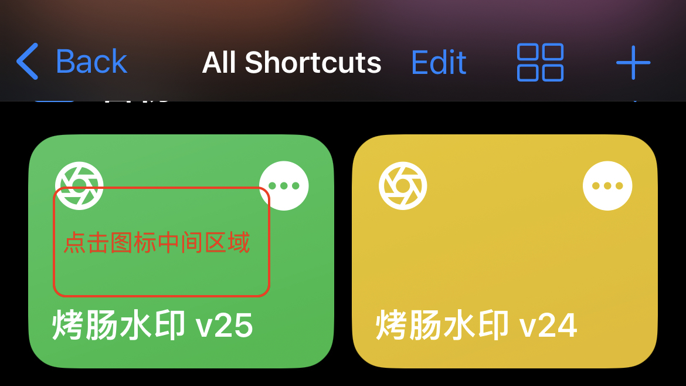
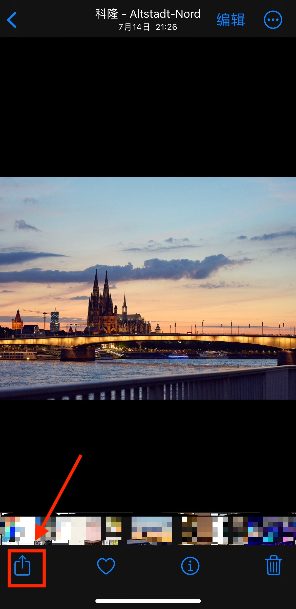
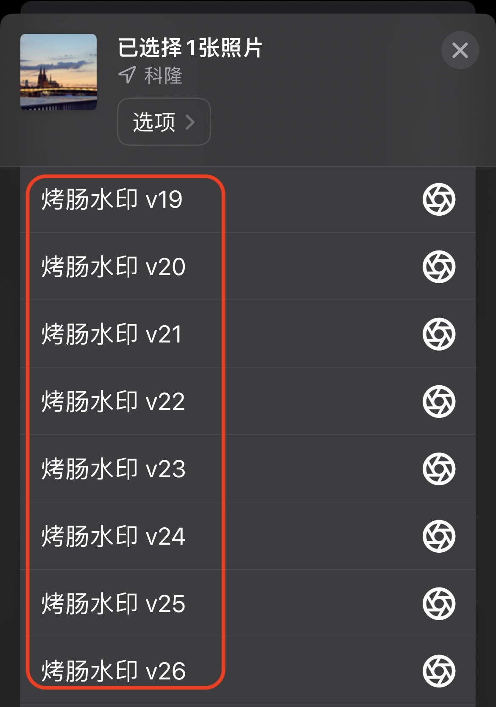

捷径 – 烤肠水印 - 徕卡水印
目录
添加了图片信息的水印图片
烤肠水印
本产品为捷径代码，无需下载任何app，直接使用。该捷径代码支持 iPhone, iPad 和 Mac电脑 使用。
产品特色
- 支持添加各大主流相机厂商的 Logo 水印：飞思，哈苏，徕卡，索尼，尼康，佳能，富士，松下等
- 根据图片信息显示拍摄设备和镜头型号，摄影爱好者的福音
- 完全自定义显示对应的拍摄参数
- 自动或者手动添加地理位置
- 按需求灵活显示拍摄地点
- 代码公开，不会上传您的图片，不会侵犯您的隐私，联网功能仅用于转换GPS坐标到城市和检查软件是否有更新，请放心使用
本捷径完全免费，如果您觉得对您有所帮助或想支持作者不断更新后续版本，欢迎微信打赏或闲鱼搜索 烤肠水印，即可支持作者。如果您打算使用外币支付，请点击 “Buy me a coffee” 按钮支持作者
奖励作者吃根烤肠
下载地址
使用方法
方法一
- 打开 iPhone, iPad 或者 Mac 的
捷径应用程序，点击烤肠水印图标中部区域即可运行，注意不要点到右上角的三个圆点编辑按钮 点击图标中间区域，不要点击右上角的三个圆点的修改按钮
- 如果不慎点击三个圆点进入修改界面，点击右下角播放按钮也可以运行该捷径。
方法二
- 选择需要添加水印的图片，然后点击
共享按钮，选择烤肠水印即可 点击图片，然后选择共享按钮，最后选择 “烤肠水印” 即可

最后如果您觉得本捷径代码对您有所帮助，欢迎转发给您身边的朋友，也欢迎来信反馈错误或提交意见。
感谢
感谢以下热心网友的热心赞助
- Gergeous